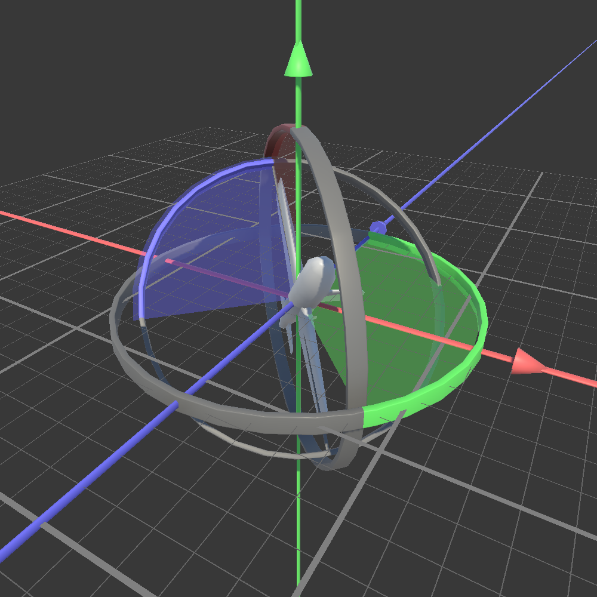
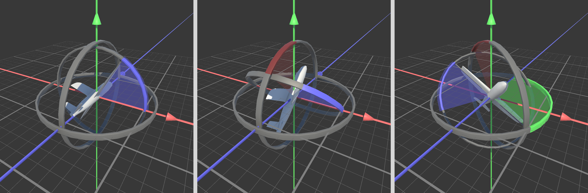

V Then Bergh
This is my introduction sentence.
This is the first sentence to describe me.
This is the second sentence to describe me.
This is the last sentence of my description.
Bachelor Thesis - Rotations
Bachelor Thesis - Rotations is an interactive educational website aimed primarily at game developers.
It teaches the mathematics & use cases for different parameterizations of three-dimensional rotations.
The project started as my bachelor thesis, in which I reframed mathematical papers about rotations to the context of game development.
In roughly 8000 words the thesis describes the properties of the four most common parameterizations: rotation vectors, quaternions, euler angles and matrices.
It culminates in a summary table that specifies which parameterization is most suitable for a given use case.
To support the thesis with over 100 images, I created an interactive visualization tool in the unity game engine.
To further improve the accessibility of the project, I am working on an interactive website that combines the explanatory aspects of the thesis with the interactive visualization tool.



Highlight: Project B
Description
Behind the scenes
My Main Equipment:
Occasional Power-ups:
Further Projects
project-type
project-type
project-type
project-type
project-type
project-type